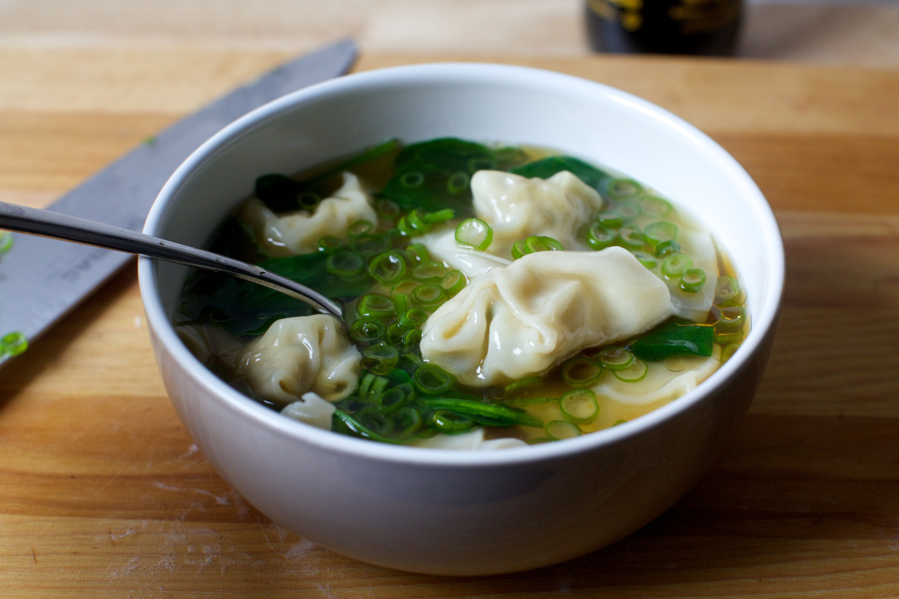

JANUARY 6, 2017 | JUMP TO RECIPE
I don’t know why it took me so long to make this as it combines the only two things I ever want when I’m sick: chicken noodle and wonton soup. The thing is, when you’re sick, you absolutely do not want to cook anything. (Also sometimes when we’re well, to be completely honest. Shh, don’t tell anyone.) And so for a couple nights, we picked up a decent chicken noodle soup in the neighborhood, but when we tired of that, ordered wonton soup instead. It’s usually a disappointment. Sometimes it seems like a quart of bland broth with three floating pockets in it, not the most filling meal. Plus, it’s off the menu for anyone who doesn’t eat pork or shrimp. But this one was not; it was chicken wontons in chicken broth and it was exceptional, the happiest mashup of the two wonderful things.
Had the delivery not come an hour later, forcing me to — gasp! — scramble some food together for the kids anyway, I probably would have never made this. But as I was enjoying my soup, I realized that this would be so ridiculously easy to hack, it might even be done before it arrived next time.
I did make it as soup here, but I also need to tell you that my favorite way to eat wontons when we’re not sniffling and sneezing is Sichuan-style, in chili oil with soy and garlic. Slippery, hot, salty and savory at once, there’s almost no going back after trying them once. This recipe from Fuschia Dunlop [https://www.epicurious.com/recipes/food/views/sichuanese-wontons-in-chilli-oil-sauce-em-hong-you-chao-shou-em-51147600] seems as straightforward as possible; I’d start with the sauce here if making them for the first time.
Chicken Wonton Soup
I found the wonton soup recipe on Serious Eats [http://www.seriouseats.com/2013/04/the-food-lab-wonton-soup.html] to be a useful reference in making this, although my recipe is intended to be quick, lazy and wildly less authentic.
As will happen, my 12-ounce package of wonton wrappers contained 50, but 1 pound of meat made 58 wontons. What’s a recipe writer to do? Do we buy extra wonton wrappers (you can freeze the rest)? Do we write a recipe for 3/4 pound of ground meat, not exactly standard package size? I went with the latter as even with 6 wontons per bowl of soup, you’ll have extra. (You can freeze these too until needed.)
I include ingredients to “doctor up” store-bought stock with ginger, garlic and scallions but I need to be completely honest here: you can probably skip it too. The wontons have the real flavor here, and a little dash of soy, toasted sesame oil and fistful of scallions go a long way at the end to making this an easy weeknight soup, yes, even with that wonton folding.
WONTONS
- 3/4 pound ground chicken
- 1 teaspoon soy sauce
- 3/4 teaspoon kosher salt
- 1 1/2 teaspoons toasted sesame oil
- 1 1/2 teaspoons grated fresh ginger
- 3 tablespoons minced garlic chives, regular chives or scallions
- Ground white pepper, to taste
- 50 wonton wrappers (about 12 ounces), thawed if frozen, thinnest ones you can find
- Cornstarch, to prevent sticking
BROTH
- 8 cups prepared chicken stock or broth, store-bought or homemade
- A 3-inch piece of ginger, peeled and sliced
- 2 large garlic cloves, crushed
- 1 bundle scallions, to be used here and to finish
- Soy sauce or salt, to taste
TO FINISH
- 3 ounces baby spinach leaves (a few handfuls)
- Toasted sesame oil and soy sauce, to taste
- Make your filling: Combine chicken, soy sauce, salt, sesame oil, ginger, chives and pepper in a bowl with a fork. If you’d like to test for seasoning, put a tiny dab in a microwave-safe bowl or plate and cook for 10 very splattery seconds. Adjust flavors as desired.
- Form your wontons: Place a few wontons wrappers on your counter. Cover the remaining ones with a piece of plastic wrap. Place 1 heaped teaspoon (from a measuring spoon set) in the center. Use your fingers dipped in water to dampen the edges. Fold one corner diagonally across to the other, pressing air out as you seal it shut. Then, bring the two corners on the wide side of the triangle down below it and use a dab of water to seal them shut. You’re not trying to pull the corners across the belly, but pointing downward. Lightly sprinkle a big plate with cornstarch and place form wontons on it. Repeat with remaining wontons. I found that after I’d made a couple and got the hang of it, I could lay out 6 at a time and get each batch of 6 done in 2 minutes, meaning that this process took me about 20 minutes total.
- Fix up your stock (optional): While you’re forming wontons, should you want to enhance your stock (see note up top first), chop the white and light green parts of your scallions into 1/2- to 1-inch segments. Cut dark green tops into thin slivers and save for garnish later. Place stock in 3 to 4-quart pot with sliced ginger, the white and light green scallions you’ve just chopped, garlic and soy sauce or salt, as needed, to season. Simmer them together for 20 minutes while you make the wontons, then strain out the ginger, scallions and garlic.
- the wontons: Once your wontons are formed, you can cook them right in the simmering broth or you can do so in simmering water — the latter is better so that the cornstarch on the wrappers doesn’t make the soup cloudy. Boil wontons for 3 minutes to cook them inside; this is really all it takes, but if you’re nervous, cut one in half to make sure.
- finish soup: Add spinach to simmering broth and let cook for one minute, until softened. Add cooked wontons to broth and let them warm through again for 30 seconds. Ladle wontons and soup into bowls. I used about 1 1/4 cups broth and 6 wontons per serving. Drizzle each dish with a little toasted sesame oil, a bit of soy sauce (if desired) and scatter with reserved dark green scallion tops. Dig in.
Do ahead: Wontons can be formed and refrigerated for a day, or frozen for a month or longer.
SEE MORE: CHICKEN, CHINESE, PHOTO, SOUP, WEEKNIGHT FAVORITE, WINTER